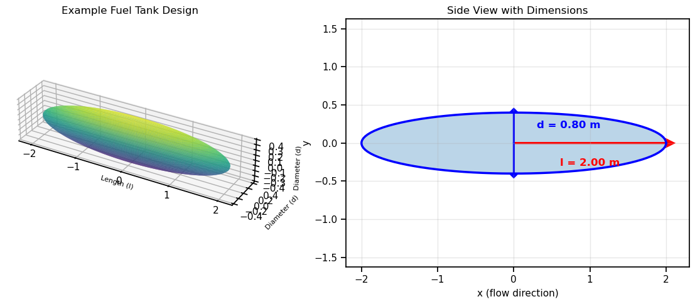
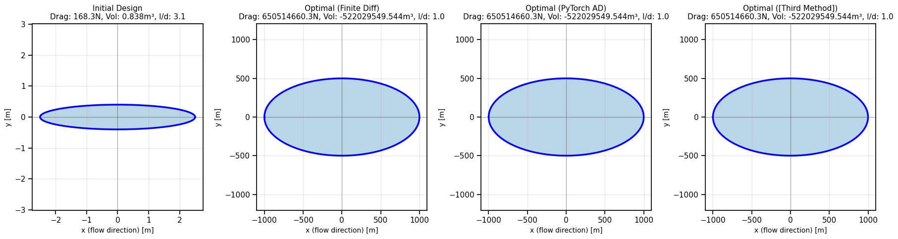
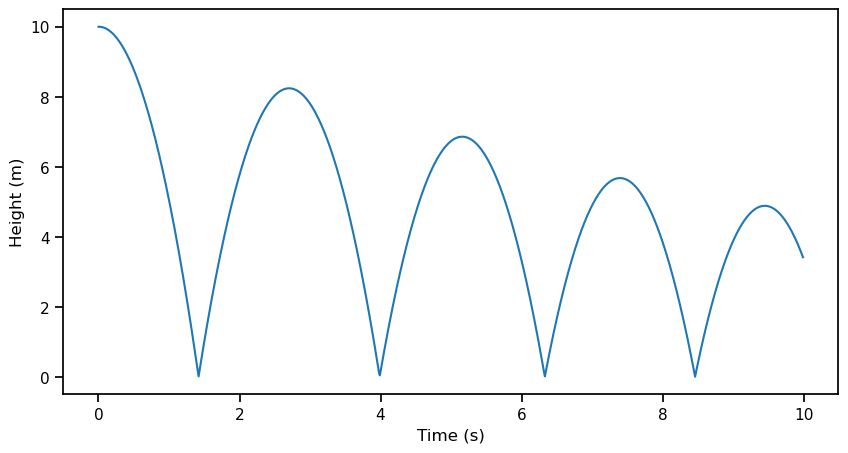
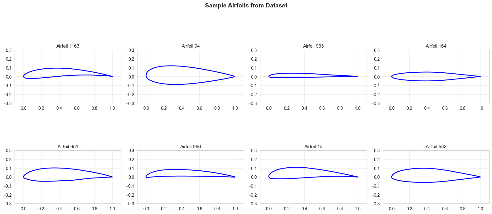

import numpy as np
import torch
import matplotlib.pyplot as plt
import seaborn as sns
from scipy import optimize
import time
sns.set_context('notebook')
np.random.seed(42)
torch.manual_seed(42)<torch._C.Generator at 0x27affd53c30>October 27 2025
This problem set is designed for independent exploration of automatic differentiation (AD) and its applications.
<torch._C.Generator at 0x27affd53c30>Recall, the main idea behind automatic differentiation is to apply the chain rule systematically to computational operations.
There are two main ‘modes’:
Forward Mode AD: Propagates derivatives forward through the computation graph alongside the function values. If you have a function \(f: \mathbb{R}^n \to \mathbb{R}^m\), forward mode computes one column of the Jacobian matrix per pass.
Backward Mode AD: Propagates derivatives backward through the computation graph (this is the same as backpropagation used in neural networks). Backward mode computes one row of the Jacobian matrix per pass.
Consider the following function with 2 inputs and 2 outputs:
\[ \begin{aligned} f_1(x_1, x_2) &= x_1^2 + \sin(x_2) \\ f_2(x_1, x_2) &= x_1 \cdot x_2 + \exp(x_1) \end{aligned} \]
We want to compute the Jacobian matrix:
\[ J = \begin{bmatrix} \frac{\partial f_1}{\partial x_1} & \frac{\partial f_1}{\partial x_2} \\ \frac{\partial f_2}{\partial x_1} & \frac{\partial f_2}{\partial x_2} \end{bmatrix} \]
evaluated at the point \((x_1, x_2) = (2, \pi)\).
In forward mode, you augment each variable with its derivative. For each variable \(v\), you track both: - \(v\) (the value) - \(\dot{v}\) (the derivative)
Example: For \(v = x_1^2\), we have: - Value: \(v = x_1^2 = 2^2 = 4\) - Derivative: \(\dot{v} = 2x_1 \cdot \dot{x}_1 = 2(2)(1) = 4\) (if we seeded with \(\dot{x}_1 = 1\))
Your Task: Compute the Jacobian using forward mode automatic differentiation. You should:
Show all intermediate computations.
Student Response:
[Write out your computational graph here (or on paper, possibly)]
[Insert your forward mode AD calculations here]
Jacobian (Forward Mode): \[ J = \begin{bmatrix} ? & ? \\ ? & ? \end{bmatrix} \]
In backward mode (backpropagation), you first compute all the forward values, then propagate derivatives backward. For each variable \(v\), you compute: - \(\bar{v} = \frac{\partial f}{\partial v}\) (the adjoint or “sensitivity” of \(f\) with respect to \(v\))
Example: For \(f_1 = v_3\) where \(v_3 = v_1 + v_2\): - If \(\bar{v}_3 = 1\) (seed value for output) - Then \(\bar{v}_1 = \bar{v}_3 \cdot \frac{\partial v_3}{\partial v_1} = 1 \cdot 1 = 1\) - And \(\bar{v}_2 = \bar{v}_3 \cdot \frac{\partial v_3}{\partial v_2} = 1 \cdot 1 = 1\)
Your Task: Compute the same Jacobian using backward mode automatic differentiation. You should:
Show all intermediate computations.
Student Response:
[Insert your backward mode AD calculations here]
Jacobian (Backward Mode, should match Forward Mode if done correctly): \[ J = \begin{bmatrix} ? & ? \\ ? & ? \end{bmatrix} \]
Now that you’ve computed the Jacobian both ways, let’s reflect on the computational cost.
Question 1: How many forward passes did you need to compute the complete Jacobian using forward mode AD?
Student Response: [Insert your answer here]
Question 2: How many backward passes did you need to compute the complete Jacobian using backward mode AD?
Student Response: [Insert your answer here]
Question 3: For this problem, is there a preferred method (forward vs backward AD) in terms of computational efficiency?
Student Response: [Insert your answer here]
This problem is adapted, with modification, from Martins, J. R. R. A., & Ning, A. (2021). Engineering Design Optimization, Cambridge University Press (page 218, problem 5.11).
In aerospace engineering, external fuel tanks are often used to extend aircraft range. These streamlined containers must carry a specific volume of fuel while minimizing aerodynamic drag.
The Design Problem: A jet aircraft needs to carry a streamlined external fuel tank with a required volume. We want to minimize the drag of an ellipsoid-shaped tank by controlling: - \(l\): length (semi-axis along the flow direction) - \(d\): diameter (semi-axis perpendicular to flow)
Geometry Equations:
For an ellipsoid, the surface area is: \[ S = \frac{\pi}{2}d^{2}\left(1 + \frac{l}{d\sqrt{1-\frac{d^{2}}{l^{2}}}}\arcsin\left(\sqrt{1-\frac{d^{2}}{l^{2}}}\right)\right) \]
And the volume is: \[ V = \frac{\pi}{6}d^{2}l \]
Aerodynamics:
The drag force on the tank is given by: \[ D = \frac{1}{2}\rho U^{2} C_{D} S \]
where: - \(\rho\) = air density = 0.312 kg/m³ (at 12,000m altitude) - \(U\) = velocity = 200 m/s - \(C_D\) = drag coefficient - \(S\) = surface area
The drag coefficient for an ellipsoid can be estimated (from Martins & Ning) as: \[ C_D = C_f \cdot \left[1 + 1.5\left(\frac{d}{l}\right)^{3/2} + 7\left(\frac{d}{l}\right)^{3}\right] \]
where \(C_f\) = 0.0035 (skin friction coefficient).
Engineering Insight: - Long, slender tanks (small \(d/l\)) have less drag but require more material - Short, fat tanks (large \(d/l\)) have more drag but are more compact - We need to maintain a minimum volume for fuel storage
Let’s first visualize what we’re designing!
# Interactive visualization of ellipsoid fuel tank
from mpl_toolkits.mplot3d import Axes3D
def plot_ellipsoid(l, d, title="Ellipsoid Fuel Tank"):
"""Visualize the ellipsoid fuel tank design"""
fig = plt.figure(figsize=(12, 5))
# 3D view
ax1 = fig.add_subplot(121, projection='3d')
# Generate ellipsoid surface
u = np.linspace(0, 2 * np.pi, 50)
v = np.linspace(0, np.pi, 50)
x = l * np.outer(np.cos(u), np.sin(v))
y = d/2 * np.outer(np.sin(u), np.sin(v))
z = d/2 * np.outer(np.ones(np.size(u)), np.cos(v))
# Plot surface
ax1.plot_surface(x, y, z, alpha=0.7, cmap='viridis', edgecolor='none')
ax1.set_xlabel('Length (l)', fontsize=8)
ax1.set_ylabel('Diameter (d)', fontsize=8)
ax1.set_zlabel('Diameter (d)', fontsize=8)
ax1.set_title(title, fontsize=12)
ax1.set_box_aspect([l, d/2, d/2])
# Side view showing dimensions
ax2 = fig.add_subplot(122)
theta = np.linspace(0, 2*np.pi, 100)
x_side = l * np.cos(theta)
y_side = d/2 * np.sin(theta)
ax2.plot(x_side, y_side, 'b-', linewidth=2.5)
ax2.fill(x_side, y_side, alpha=0.3)
ax2.arrow(0, 0, l, 0, head_width=0.1, head_length=0.1, fc='red', ec='red', linewidth=2)
ax2.text(l/2, -0.3, f'l = {l:.2f} m', fontsize=12, ha='center', color='red', fontweight='bold')
ax2.arrow(0, 0, 0, d/2, head_width=0.1, head_length=0.05, fc='blue', ec='blue', linewidth=2)
ax2.arrow(0, 0, 0, -d/2, head_width=0.1, head_length=0.05, fc='blue', ec='blue', linewidth=2)
ax2.text(0.3, d/4, f'd = {d:.2f} m', fontsize=12, color='blue', fontweight='bold')
ax2.set_xlabel('x (flow direction)', fontsize=11)
ax2.set_ylabel('y', fontsize=11)
ax2.set_title('Side View with Dimensions', fontsize=12)
ax2.axis('equal')
ax2.grid(True, alpha=0.3)
plt.tight_layout()
plt.show()
# Example: visualize a candidate design
l_example = 2.0 # meters
d_example = 0.8 # meters
plot_ellipsoid(l_example, d_example, "Example Fuel Tank Design")
# Compute properties for this design
V_example = (np.pi/6) * d_example**2 * l_example
print(f"\nExample Design Properties:")
print(f" Length (l) = {l_example:.2f} m")
print(f" Diameter (d) = {d_example:.2f} m")
print(f" Volume = {V_example:.4f} m³")
print(f" Aspect ratio (l/d) = {l_example/d_example:.2f}")
Example Design Properties:
Length (l) = 2.00 m
Diameter (d) = 0.80 m
Volume = 0.6702 m³
Aspect ratio (l/d) = 2.50As engineers, we need to compute the derivatives of the output objectives (drag \(D\) and volume \(V\)) with respect to the design inputs (length \(l\) and diameter \(d\)). Although we could do this analytically using calculus, we want to test the best method for computing derivatives so we can adapt when problems become more complex.
Design Point: Let’s analyze a baseline design with \(l = 2.5\) m and \(d = 0.8\) m.
First, let’s implement the objective functions:
# Constants
RHO = 0.312 # Air density at 12,000m (kg/m³)
U = 200.0 # Velocity (m/s)
C_F = 0.0035 # Skin friction coefficient
# NumPy implementations
def surface_area(l, d):
"""Ellipsoid surface area (numpy version)"""
# Ensure l > d to avoid domain errors in arcsin
ratio_sq = (d / l) ** 2
if ratio_sq >= 1.0:
# Degenerate case - return sphere surface area as approximation
return 4 * np.pi * (d/2)**2
sqrt_term = np.sqrt(1 - ratio_sq)
S = (np.pi / 2) * d**2 * (1 + (l / (d * sqrt_term)) * np.arcsin(sqrt_term))
return S
def volume(l, d):
"""Ellipsoid volume (numpy version)"""
return (np.pi / 6) * d**2 * l
def drag_coefficient(l, d):
"""Drag coefficient for ellipsoid (numpy version)"""
ratio = d / l
C_D = C_F * (1 + 1.5 * ratio**(3/2) + 7 * ratio**3)
return C_D
def drag(l, d):
"""Total drag force (numpy version)"""
S = surface_area(l, d)
C_D = drag_coefficient(l, d)
D = 0.5 * RHO * U**2 * C_D * S
return D
# Test at baseline design - use a design where l > d
l_baseline = 2.5
d_baseline = 0.8
S_baseline = surface_area(l_baseline, d_baseline)
V_baseline = volume(l_baseline, d_baseline)
CD_baseline = drag_coefficient(l_baseline, d_baseline)
D_baseline = drag(l_baseline, d_baseline)
print(f"Baseline Design (l={l_baseline}m, d={d_baseline}m):")
print(f" Surface area: {S_baseline:.4f} m²")
print(f" Volume: {V_baseline:.4f} m³")
print(f" Drag coefficient: {CD_baseline:.6f}")
print(f" Drag force: {D_baseline:.2f} N")
print(f" Aspect ratio l/d: {l_baseline/d_baseline:.2f}")Baseline Design (l=2.5m, d=0.8m):
Surface area: 5.1339 m²
Volume: 0.8378 m³
Drag coefficient: 0.005253
Drag force: 168.29 N
Aspect ratio l/d: 3.12Backward mode AD works by: 1. Forward pass: Compute all intermediate values from inputs to output 2. Backward pass: Starting from the output, propagate gradients backward using the chain rule
In our case we have a function with 2 inputs (\(l\), \(d\)) and 1 output (\(D\), drag force). Let’s focus on computing the gradient of drag:
\[ \nabla D = \begin{bmatrix} \frac{\partial D}{\partial l} \\ \frac{\partial D}{\partial d} \end{bmatrix} \]
For each intermediate variable \(v\), we compute its adjoint (sensitivity): \[ \bar{v} = \frac{\partial D}{\partial v} \]
The adjoint tells us “how much does the output \(D\) change if we perturb \(v\)?”
Your Task: Compute this gradient using backward mode automatic differentiation (also called reverse-mode AD or backpropagation).
First, break down the drag computation into elementary operations. Here’s a template to get you started:
Inputs: l, d
Intermediate calculations example (fill in the formulas):
v₁ = d/l (diameter-to-length ratio)
v₂ = v₁²
v₃ = 1 - v₂
v₄ = √v₃
v₅ = arcsin(v₄)
v₆ = d²
v₇ = d·v₄
v₈ = l/v₇
v₉ = v₈·v₅
v₁₀ = 1 + v₉
...
[Continue adding intermediate variables until you reach D]Task 1a: Complete the computational graph by identifying ALL intermediate variables from the inputs (\(l\), \(d\)) to the final output (\(D\)). Number them sequentially (v₁, v₂, v₃, …, v_N).
Student Response: [Draw or write out your complete computational graph here]
Evaluate all intermediate variables at the baseline design point: \(l = 2.5\) m, \(d = 0.8\) m.
Task 1b: Compute the numerical values of all intermediate variables in your graph.
Student Response:
l = 2.5
d = 0.8
v₁ = ?
v₂ = ?
v₃ = ?
...
D = ?Now propagate gradients backward! Start with \(\bar{D} = 1\) (the gradient of \(D\) with respect to itself), then work backward through the graph.
Task 1c: Compute all adjoints working backward from \(\bar{D} = 1\) to \(\bar{l}\) and \(\bar{d}\).
Student Response:
Backward pass starting from D:
D̄ = 1 (seed value)
[Work backward through your computational graph]
v̄_N = ?
v̄_{N-1} = ?
...
v̄₃ = ?
v̄₂ = ?
v̄₁ = ?
Final gradients (these are what we want!):
∂D/∂l = l̄ = ?
∂D/∂d = d̄ = ?Task 1d: Once you’ve computed the gradients, interpret them physically:
Question 1: What does the value of \(\frac{\partial D}{\partial l}\) imply physically? (If we increase length, does drag increase or decrease?)
Student Response: [Insert your answer here]
Question 2: What does the value of \(\frac{\partial D}{\partial d}\) imply physically?
Student Response: [Insert your answer here]
Question 3: Which variable has a larger effect on drag? Does this make engineering sense?
Student Response: [Insert your answer here]
Now let’s implement automatic differentiation using PyTorch and time both the forward and backward passes.
Your Task: 1. Reimplement your functions using PyTorch operations (torch tensors) 2. Compute the Jacobian matrix using PyTorch’s autograd 3. Time the forward pass (function evaluation) 4. Time the backward pass (gradient computation)
# Student Task: Implement PyTorch versions of the functions
def surface_area_torch(l, d):
"""PyTorch version of surface_area"""
# TODO: Implement using torch operations (torch.arcsin, torch.sqrt, etc.)
pass
def volume_torch(l, d):
"""PyTorch version of volume"""
# TODO: Implement
pass
def drag_coefficient_torch(l, d):
"""PyTorch version of drag_coefficient"""
# TODO: Implement
pass
def drag_torch(l, d):
"""PyTorch version of drag"""
# TODO: Implement
pass
# Compute Jacobian using PyTorch
# Hints:
# 1. Create torch tensors for l and d with requires_grad=True
# 2. Compute both outputs (D and V)
# 3. Use torch.autograd.grad or .backward() to get gradients
# 4. For a Jacobian with multiple outputs, you need to call backward() for each output
x = torch.tensor([l_baseline, d_baseline], requires_grad=True, dtype=torch.float64)
l_t, d_t = x[0], x[1]
# First row: gradients of D
D = drag_torch(l_t, d_t)
grad_D = torch.autograd.grad(D, x, retain_graph=True)[0]
# Second row: gradients of V
V = volume_torch(l_t, d_t)
grad_V = torch.autograd.grad(V, x)[0]
jacobian = torch.stack([grad_D, grad_V]).numpy()
print("\nJacobian Matrix (from PyTorch AD):")
print(f" ∂D/∂l = {jacobian[0,0]:.6f}")
print(f" ∂D/∂d = {jacobian[0,1]:.6f}")
print(f" ∂V/∂l = {jacobian[1,0]:.6f}")
print(f" ∂V/∂d = {jacobian[1,1]:.6f}")
# Time the forward and backward passes
n_reps = 10000
# Time forward pass
start = time.time()
for _ in range(n_reps):
x = torch.tensor([l_baseline, d_baseline], requires_grad=True, dtype=torch.float64)
D = drag_torch(x[0], x[1])
V = volume_torch(x[0], x[1])
time_forward = (time.time() - start) / n_reps
# Time backward pass
start = time.time()
for _ in range(n_reps):
x = torch.tensor([l_baseline, d_baseline], requires_grad=True, dtype=torch.float64)
D = drag_torch(x[0], x[1])
V = volume_torch(x[0], x[1])
grad_D = torch.autograd.grad(D, x, retain_graph=True)[0]
grad_V = torch.autograd.grad(V, x)[0]
time_backward = (time.time() - start) / n_reps
print(f"\nTiming Results:")
print(f" Forward pass: {time_forward*1e6:.2f} µs")
print(f" Backward pass: {time_backward*1e6:.2f} µs")
print(f" Overhead of AD: {(time_backward/time_forward - 1)*100:.1f}%")Reflection: Did you observe the backward pass taking more time than the forward pass? If you did, does this make sense?
Now for the real engineering problem! The aircraft requires the fuel tank to have a volume of at least 0.5 m³ to carry enough fuel. This gives us a constraint:
\[ V \geq V_{\text{req}} = 0.5 \text{ m}^3 \]
Or equivalently (for standard optimization form): \[ g(l, d) = V_{\text{req}} - V(l, d) \leq 0 \]
Optimization Problem: \[ \begin{aligned} \text{minimize} \quad & D(l, d) \\ \text{subject to} \quad & V(l, d) \geq 0.5 \\ & l > 0, \quad d > 0 \end{aligned} \]
Your Task: Solve this optimization problem using three different methods for computing gradients: 1. Finite differences (from Problem 3, Part B) 2. PyTorch automatic differentiation 3. Third Method: Could be the SciPy default gradient computation (SciPy defaults to a “2-point finite difference estimation with an absolute step size”), or another method, such as complex-step method (which can be done manually but is also built in to SciPy), another FD method, or an analytical gradient method
We’ll use scipy’s SLSQP optimizer, which is designed for constrained optimization problems. The code is provided below - your job is to implement the gradient functions and compare the results. When you compare the results, it may be useful to run multiple trials
V_REQUIRED = 0.5 # m³
# Wrapper functions for scipy (which expects 1D arrays)
def drag_wrapper(x):
"""Objective function: drag"""
l, d = x[0], x[1]
return drag(l, d)
def volume_constraint(x):
"""Constraint function: V - V_req >= 0"""
l, d = x[0], x[1]
return volume(l, d) - V_REQUIRED
# Student Task: Implement gradient functions
def drag_gradient_fd(x, eps=1e-7):
"""
Compute gradient of drag using finite differences.
Use the finite_difference_gradient function from Problem 3!
"""
# TODO: Implement
pass
def drag_gradient_torch(x):
"""
Compute gradient of drag using PyTorch AD.
Hint: Convert x to torch tensor, compute drag, call backward(), extract gradient
"""
# TODO: Implement
pass
def constraint_gradient_fd(x, eps=1e-7):
"""Gradient of volume constraint using finite differences"""
# TODO: Implement
pass
def constraint_gradient_torch(x):
"""Gradient of volume constraint using PyTorch AD"""
# TODO: Implement
pass
# Depending on what you do, you can also manually define the third method gradients here.
# If you are using SciPy's built in gradient estimation methods, you do not need to define these functions.
# Initial guess (start from baseline design)
x0 = np.array([l_baseline, d_baseline])
print("="*70)
print("SOLVING CONSTRAINED OPTIMIZATION PROBLEM")
print("="*70)
print(f"Objective: Minimize drag")
print(f"Constraint: Volume >= {V_REQUIRED} m³")
print(f"Initial design: l={x0[0]:.2f}m, d={x0[1]:.2f}m")
print(f"Initial drag: {drag_wrapper(x0):.2f} N")
print(f"Initial volume: {volume(x0[0], x0[1]):.4f} m³")
print()======================================================================
SOLVING CONSTRAINED OPTIMIZATION PROBLEM
======================================================================
Objective: Minimize drag
Constraint: Volume >= 0.5 m³
Initial design: l=2.50m, d=0.80m
Initial drag: 168.29 N
Initial volume: 0.8378 m³
Implementation Note: The optimization problem below may converge to different local minima depending on the initial guess. For a more robust analysis, consider running multiple trials with random initial guesses and computing both the average and best results.
# Method 1: Finite Differences
print("Method 1: Optimization with Finite Difference Gradients")
print("-"*70)
constraint_fd = {'type': 'ineq', 'fun': volume_constraint, 'jac': constraint_gradient_fd}
bounds = [(0.1, 10.0), (0.1, 10.0)] # l and d must be positive
result_fd = optimize.minimize(
drag_wrapper,
x0=x0,
method='SLSQP',
jac=drag_gradient_fd,
constraints=constraint_fd,
bounds=bounds,
options={'disp': True, 'maxiter': 100} # If you are averaging over many trials, consider turning disp off (this prints convergence information)
)
l_opt_fd, d_opt_fd = result_fd.x
print(f"\nOptimal design (FD):")
print(f" l = {l_opt_fd:.4f} m")
print(f" d = {d_opt_fd:.4f} m")
print(f" Drag = {drag_wrapper(result_fd.x):.2f} N")
print(f" Volume = {volume(l_opt_fd, d_opt_fd):.4f} m³")
print(f" Function evaluations: {result_fd.nfev}")
print(f" Gradient evaluations: {result_fd.njev}")
print()# Method 2: PyTorch AD
print("Method 2: Optimization with PyTorch AD Gradients")
print("-"*70)
constraint_torch = {'type': 'ineq', 'fun': volume_constraint, 'jac': constraint_gradient_torch}
result_torch = optimize.minimize(
drag_wrapper,
x0=x0,
method='SLSQP',
jac=drag_gradient_torch,
constraints=constraint_torch,
bounds=bounds,
options={'disp': True, 'maxiter': 100}
)
l_opt_torch, d_opt_torch = result_torch.x
print(f"\nOptimal design (PyTorch AD):")
print(f" l = {l_opt_torch:.4f} m")
print(f" d = {d_opt_torch:.4f} m")
print(f" Drag = {drag_wrapper(result_torch.x):.2f} N")
print(f" Volume = {volume(l_opt_torch, d_opt_torch):.4f} m³")
print(f" Function evaluations: {result_torch.nfev}")
print(f" Gradient evaluations: {result_torch.njev}")
print()# Method 3: Your Choice
print("Method 3: Optimization with [Third Method]")
print("-"*70)
# bogus placeholder for third method constraint
constraint_gradient_third_method = None # Implement OR use a built in method from the SciPy documentation
constraint_third_method = {'type': 'ineq', 'fun': volume_constraint, 'jac': constraint_gradient_third_method}
result_third_method = optimize.minimize(
drag_wrapper,
x0=x0,
method='SLSQP',
jac=constraint_gradient_third_method, # Actually implement this with your third method gradient function if applicable
constraints=constraint_third_method,
bounds=bounds,
options={'disp': True, 'maxiter': 100}
)
l_opt_third_method, d_opt_third_method = result_third_method.x
print(f"\nOptimal design ([Third Method]):")
print(f" l = {l_opt_third_method:.4f} m")
print(f" d = {d_opt_third_method:.4f} m")
print(f" Drag = {drag_wrapper(result_third_method.x):.2f} N")
print(f" Volume = {volume(l_opt_third_method, d_opt_third_method):.4f} m³")
print(f" Function evaluations: {result_third_method.nfev}")
print(f" Gradient evaluations: {result_third_method.njev}")
print()Average and find the best results
print("="*70)
print("OPTIMIZATION RESULTS SUMMARY (BEST TRIALS)")
print("="*70)
print(f"{'Method':<20} {'l (m)':<10} {'d (m)':<10} {'Drag (N)':<12} {'Func Evals':<12} {'Grad Evals':<12}")
print("-"*70)
# bogus values:
l_opt_fd_best = -999
d_opt_fd_best = -999
nfev_fd_best = -999
njev_fd_best = -999
l_opt_torch_best = -999
d_opt_torch_best = -999
nfev_torch_best = -999
njev_torch_best = -999
l_opt_third_method_best = -999
d_opt_third_method_best = -999
nfev_third_method_best = -999
njev_third_method_best = -999
l_opt_fd_avg = -999
d_opt_fd_avg = -999
nfev_fd_avg = -999
njev_fd_avg = -999
l_opt_torch_avg = -999
d_opt_torch_avg = -999
nfev_torch_avg = -999
njev_torch_avg = -999
l_opt_third_method_avg = -999
d_opt_third_method_avg = -999
nfev_third_method_avg = -999
njev_third_method_avg = -999
print(f"{'(best) Finite Diff':<20} {l_opt_fd_best:<10.4f} {d_opt_fd_best:<10.4f} {drag_wrapper([l_opt_fd_best, d_opt_fd_best]):<12.2f} {nfev_fd_best:<12} {njev_fd_best:<12}")
print(f"{'(best) PyTorch AD':<20} {l_opt_torch_best:<10.4f} {d_opt_torch_best:<10.4f} {drag_wrapper([l_opt_torch_best, d_opt_torch_best]):<12.2f} {nfev_torch_best:<12} {njev_torch_best:<12}")
print(f"{'(best) Third Method':<20} {l_opt_third_method_best:<10.4f} {d_opt_third_method_best:<10.4f} {drag_wrapper([l_opt_third_method_best, d_opt_third_method_best]):<12.2f} {nfev_third_method_best:<12} {njev_third_method_best:<12}")
print(f"{'Average Finite Diff':<20} {l_opt_fd_avg:<10.4f} {d_opt_fd_avg:<10.4f} {drag_wrapper([l_opt_fd_avg, d_opt_fd_avg]):<12.2f} {nfev_fd_avg:<12.1f} {njev_fd_avg:<12.1f}")
print(f"{'Average PyTorch AD':<20} {l_opt_torch_avg:<10.4f} {d_opt_torch_avg:<10.4f} {drag_wrapper([l_opt_torch_avg, d_opt_torch_avg]):<12.2f} {nfev_torch_avg:<12.1f} {njev_torch_avg:<12.1f}")
print(f"{'Average [Third Method]':<20} {l_opt_third_method_avg:<10.4f} {d_opt_third_method_avg:<10.4f} {drag_wrapper([l_opt_third_method_avg, d_opt_third_method_avg]):<12.2f} {nfev_third_method_avg:<12.1f} {njev_third_method_avg:<12.1f}")
# Accuracies could be done too if you get the analytical solution:
# This can be useful, since the methods may converge to very similar results
# You can also try to exclude convergence failures from the averages above based on tolerances
# bogus values:
l_analytical = -999
d_analytical = -999
print("\nAnalytical Values (if derived - see the 'Bonus Side Note' if you are interested):")
print(f" l = {l_analytical:.4f} m")
print(f" d = {d_analytical:.4f} m")
print(f" Drag = {drag_wrapper([l_analytical, d_analytical]):.2f} N")
print(f" Volume = {volume(l_analytical, d_analytical):.4f} m³")
print("\nAnalytical Error Comparison (best):")
print(f"{'Method':<20} {'l Error (m)':<15} {'d Error (m)':<15} {'Drag Error (N)':<15}")
print("-"*70)
print(f"{'(best) Finite Diff':<20} {abs(l_opt_fd_best - l_analytical):<15.6f} {abs(d_opt_fd_best - d_analytical):<15.6f} {abs(drag_wrapper([l_opt_fd_best, d_opt_fd_best]) - drag_wrapper([l_analytical, d_analytical])):<15.6f}")
print(f"{'(best) PyTorch AD':<20} {abs(l_opt_torch_best - l_analytical):<15.6f} {abs(d_opt_torch_best - d_analytical):<15.6f} {abs(drag_wrapper([l_opt_torch_best, d_opt_torch_best]) - drag_wrapper([l_analytical, d_analytical])):<15.6f}")
print(f"{'(best) Third Method':<20} {abs(l_opt_third_method_best - l_analytical):<15.6f} {abs(d_opt_third_method_best - d_analytical):<15.6f} {abs(drag_wrapper([l_opt_third_method_best, d_opt_third_method_best]) - drag_wrapper([l_analytical, d_analytical])):<15.6f}")
print(f"{'Average Finite Diff':<20} {abs(l_opt_fd_avg - l_analytical):<15.6f} {abs(d_opt_fd_avg - d_analytical):<15.6f} {abs(drag_wrapper([l_opt_fd_avg, d_opt_fd_avg]) - drag_wrapper([l_analytical, d_analytical])):<15.6f}")
print(f"{'Average PyTorch AD':<20} {abs(l_opt_torch_avg - l_analytical):<15.6f} {abs(d_opt_torch_avg - d_analytical):<15.6f} {abs(drag_wrapper([l_opt_torch_avg, d_opt_torch_avg]) - drag_wrapper([l_analytical, d_analytical])):<15.6f}")
print(f"{'Average [Third Method]':<20} {abs(l_opt_third_method_avg - l_analytical):<15.6f} {abs(d_opt_third_method_avg - d_analytical):<15.6f} {abs(drag_wrapper([l_opt_third_method_avg, d_opt_third_method_avg]) - drag_wrapper([l_analytical, d_analytical])):<15.6f}")======================================================================
OPTIMIZATION RESULTS SUMMARY (BEST TRIALS)
======================================================================
Method l (m) d (m) Drag (N) Func Evals Grad Evals
----------------------------------------------------------------------
(best) Finite Diff -999.0000 -999.0000 650514660.30 -999 -999
(best) PyTorch AD -999.0000 -999.0000 650514660.30 -999 -999
(best) Third Method -999.0000 -999.0000 650514660.30 -999 -999
Average Finite Diff -999.0000 -999.0000 650514660.30 -999.0 -999.0
Average PyTorch AD -999.0000 -999.0000 650514660.30 -999.0 -999.0
Average Third Method -999.0000 -999.0000 650514660.30 -999.0 -999.0
Analytical Values (if derived - see the 'Bonus Side Note' if you are interested):
l = -999.0000 m
d = -999.0000 m
Drag = 650514660.30 N
Volume = -522029549.5442 m³
Analytical Error Comparison (best):
Method l Error (m) d Error (m) Drag Error (N)
----------------------------------------------------------------------
(best) Finite Diff 0.000000 0.000000 0.000000
(best) PyTorch AD 0.000000 0.000000 0.000000
(best) Third Method 0.000000 0.000000 0.000000
Average Finite Diff 0.000000 0.000000 0.000000
Average PyTorch AD 0.000000 0.000000 0.000000
Average Third Method 0.000000 0.000000 0.000000 # Visualize initial and optimal designs
fig, axes = plt.subplots(1, 4, figsize=(18, 5))
designs = [
(l_baseline, d_baseline, "Initial Design"),
(l_opt_fd_best, d_opt_fd_best, "Optimal (Finite Diff)"),
(l_opt_torch_best, d_opt_torch_best, "Optimal (PyTorch AD)"),
(l_opt_third_method_best, d_opt_third_method_best, "Optimal ([Third Method])")
]
print(l_baseline, d_baseline, l_opt_fd_best, d_opt_fd_best, l_opt_torch_best, d_opt_torch_best)
for idx, (l, d, title) in enumerate(designs):
ax = axes[idx]
theta = np.linspace(0, 2*np.pi, 100)
x_side = l * np.cos(theta)
y_side = d/2 * np.sin(theta)
ax.plot(x_side, y_side, 'b-', linewidth=2.5)
ax.fill(x_side, y_side, alpha=0.3)
ax.set_xlabel('x (flow direction) [m]', fontsize=10)
ax.set_ylabel('y [m]', fontsize=10)
drag_val = drag(l, d)
vol_val = volume(l, d)
ax.set_title(f'{title}\nDrag: {drag_val:.1f}N, Vol: {vol_val:.3f}m³, l/d: {l/d:.1f}', fontsize=11)
ax.axis('equal')
ax.grid(True, alpha=0.3)
# Add aspect markers
ax.axhline(0, color='k', linewidth=0.5, alpha=0.5)
ax.axvline(0, color='k', linewidth=0.5, alpha=0.5)
plt.tight_layout()
plt.show()
print(f"Initial aspect ratio: {x0[0]/x0[1]:.1f}:1")
print(f"Optimal aspect ratio: {l_opt_torch_best/d_opt_torch_best:.1f}:1")
print(f"Drag reduction: {(1 - drag(l_opt_torch_best, d_opt_torch_best)/drag(x0[0], x0[1]))*100:.1f}%")2.5 0.8 -999 -999 -999 -999
Initial aspect ratio: 3.1:1
Optimal aspect ratio: 1.0:1
Drag reduction: -386548751.7%As a smart engineer, you may have realized that the volume constraint is probably active at the optimum (i.e., the tank will just meet the volume requirement). With this information, you can reduce the problem to a single-variable optimization by expressing one variable in terms of the other using the volume constraint, allowing you to solve this analytically without the need for constrained optimization methods.
If you want, you can easily derive this, and compare your solution against the analytical one - this could help you compare the numerical accuracy of your optimization results in a more rigorous way.
One powerful application of automatic differentiation is sensitivity analysis: understanding how outputs depend on inputs.
AD makes sensitivity analysis trivial—we just compute gradients! Without AD, you’d need finite differences (slow and inaccurate) or hand-derived formulas (error-prone and not maintainable).
Consider a simple physics simulation: a bouncing ball. The simulation has parameters: - g: gravitational acceleration (m/s²) - e: coefficient of restitution - controls energy loss (0 < e < 1) - v0: initial velocity (m/s) - h0: initial height (m)
We will use the following parameters: g = 10.0 m/s² e = 0.9 v0 = 0.0 m/s h0 = 10.0 m
And we will use a dt of 0.01 seconds for the simulation time step, for a total of 1000 time steps.
The simulation uses a simple Euler integrator with a conditional (bounce detection), making it non-trivial to differentiate by hand!
def bounce_simulation(g, e, v0, h0, num_timesteps=1000):
"""
Simulate a bouncing ball using Euler integration.
Args:
g: gravity
e: coefficient of restitution
v0: initial velocity
h0: initial height
num_timesteps: number of timesteps to simulate
Returns:
v_final: final velocity after simulation
"""
v = 0
h = 0
hprev = h0
vprev = v0
dt = 0.01 # seconds
h_tape = [hprev]
t_tape = [0]
v_tape = [vprev]
for i in range(1, num_timesteps):
# # Update position and velocity
h = hprev + vprev * dt
v = vprev - g * dt
# Check for bounce (conditional!)
if h <= 0:
h = -h # Assume ball regains height lost
v = -e * v # Reverse velocity with energy loss
hprev = h
vprev = v
t_tape.append(t_tape[-1] + dt)
h_tape.append(h)
v_tape.append(v)
return v, h, h_tape, t_tape, v_tape
# Side note: Since we are using Euler/verlet integration -
# if you change h0 or another parameter to get a lot of bounces, the error may accumulate significantly.
# This could result in an unphysical result (e.g., the ball bouncing higher than its initial height).
# For our purposes here, dt and timesteps have been tuned for the parameters you will try to keep this error small.
g = 10.0
e = 0.9
v0 = 0.0
h0 = 10.0
# Test the simulation
v_final, h_final, h_tape, t_tape, v_tape = bounce_simulation(g, e, v0, h0, 1000)
print(f"Final velocity: {v_final:.2f} m/s")
print(f"Final height: {h_final:.2f} m")
print(f"\nParameters: g={g}, e={e}, v0={v0}, h0={h0}")
plt.figure(figsize=(10, 5))
plt.plot(t_tape, h_tape, label='Height (m)')
plt.xlabel('Time (s)')
plt.ylabel('Height (m)')
v_tape_h0_1 = v_tape
h_tape_h0_1 = h_tapeFinal velocity: -5.48 m/s
Final height: 3.41 m
Parameters: g=10.0, e=0.9, v0=0.0, h0=10.0
Question: Which parameter has the biggest influence on the final velocity?
With AD, we want to compute the sensitivities: \[ \nabla v_{\text{final}} = \left[\frac{\partial v_{\text{final}}}{\partial g}, \frac{\partial v_{\text{final}}}{\partial e}, \frac{\partial v_{\text{final}}}{\partial v_0}, \frac{\partial v_{\text{final}}}{\partial h_0}\right] \]
Your Task: Use PyTorch to compute these sensitivities at the final timestep. Also, plot your sensitivities as a function of time. You may want to change the function such that the input is a vector of parameters rather than separate scalars.
Question 1: Which parameter has the largest influence on the final velocity (largest absolute sensitivity)?
Student Response: [Insert your answer here]
Question 2: How do the sensitivities behave as a function of time? What happens to each parameter at and between bounces?
Student Response: [Insert your answer here]
Question 3: What happens when we change \(h_0\) to 1.0 m? How do the sensitivities change?
Student Response: [Insert your answer here]
Question 4: What parameters have the least influence on the final velocity? Is there a flaw in the simulation or AD approach that could explain this - or does everything make sense physically?
Student Response: [Insert your answer here]
Observation: You may have noticed that the sensitivity to one of the parameters is approximately zero. Let’s investigate this further.
We can confirm our suspicions by double-checking our AD result against an approximate sensitivity calculation.
Task: For the parameter(s) you found to have near-zero sensitivity, compute a sensitivity approximation by perturbing the parameter in question. Plot the sensitvity as a function of time and compare it to the AD result.
Question 1: Is there a discrepancy between the AD and approximated results? If so, why could this be happening? (Hint: are there discontinuities in the simulation or not?)
Student Response: [Insert your answer here]
Question 2: If there is a discrepancy, how would you fix it? If not, why does everything make sense physically? (You do not actually need to implement the fix, just describe it. Alternatively, you can try and prove that no discrepancy exists (i.e by writing out an example AD computation through a bounce))
Student Response: [Insert your answer here]
In this problem set, you will: 1. Train a baseline GAN on 1D airfoil curves 2. Diagnose training issues using metrics and visualizations 3. Select and implement GAN improvements from a “word bank” of modern techniques 4. Hypothesize the impact of each improvement before testing 5. Compare results and understand which techniques help in which scenarios
Generative Adversarial Networks are notoriously difficult to train. Over the years, researchers have developed various techniques to improve training stability, output quality, and diversity. In this exercise, you’ll work with a 1D GAN that generates airfoil shapes.
You’ll start with a baseline implementation that has known issues, then systematically apply improvements from the literature to see their effects.
Dataset: 1,528 airfoil curves, each represented as 192 (x,y) coordinate pairs
Task: Generate realistic airfoil shapes
Challenge: Airfoils must be smooth, physically valid, and diverse
import os
import io
import numpy as np
import torch as th
import torch.nn as nn
import torch.optim as optim
from torch.utils.data import DataLoader, TensorDataset
import matplotlib.pyplot as plt
from matplotlib.gridspec import GridSpec
import seaborn as sns
from typing import NamedTuple, Optional
import requests
from sklearn.decomposition import PCA
import warnings
import random
warnings.filterwarnings('ignore')
# Set style
sns.set_style("whitegrid")
plt.rcParams['figure.dpi'] = 100
# Set seeds for reproducibility
SEED = 0
random.seed(SEED)
np.random.seed(SEED)
th.manual_seed(SEED)
th.cuda.manual_seed(SEED)
th.cuda.manual_seed_all(SEED)
th.backends.cudnn.deterministic = True
th.backends.cudnn.benchmark = False
# Device selection
if th.backends.mps.is_available():
device = th.device("mps")
# Set MPS seed
th.mps.manual_seed(SEED)
elif th.cuda.is_available():
device = th.device("cuda")
else:
device = th.device("cpu")
print(f"Using device: {device}")
print(f"Random seed: {SEED}")Using device: mps# Load airfoil data
url = "https://github.com/IDEALLab/ML4ME_Textbook/raw/main/part1/airfoil_interp_uniform.npy"
response = requests.get(url)
X_airfoils = np.load(io.BytesIO(response.content)) # Shape: (1528, 192, 2)
print(f"Dataset shape: {X_airfoils.shape}")
print(f"Number of airfoils: {X_airfoils.shape[0]}")
print(f"Points per airfoil: {X_airfoils.shape[1]}")
# Flatten to (N, 384) for easier handling
X_flat = X_airfoils.reshape(X_airfoils.shape[0], -1)
# Normalize to [-1, 1] range (important for tanh output)
X_mean = X_flat.mean(axis=0, keepdims=True)
X_std = X_flat.std(axis=0, keepdims=True) + 1e-8
X_normalized = (X_flat - X_mean) / X_std
X_normalized = np.clip(X_normalized, -3, 3) / 3 # Soft clip to [-1, 1]
print(f"\nNormalized data range: [{X_normalized.min():.3f}, {X_normalized.max():.3f}]")
# Visualize some airfoils
fig, axes = plt.subplots(2, 4, figsize=(16, 8))
axes = axes.flatten()
for i in range(8):
idx = np.random.randint(0, len(X_airfoils))
airfoil = X_airfoils[idx]
axes[i].plot(airfoil[:, 0], airfoil[:, 1], 'b-', linewidth=2)
axes[i].set_aspect('equal')
axes[i].set_title(f'Airfoil {idx}', fontsize=11)
axes[i].grid(True, alpha=0.3)
axes[i].set_xlim(-0.1, 1.1)
axes[i].set_ylim(-0.3, 0.3)
plt.suptitle('Sample Airfoils from Dataset', fontsize=14, fontweight='bold')
plt.tight_layout()
plt.show()Dataset shape: (1528, 192, 2)
Number of airfoils: 1528
Points per airfoil: 192
Normalized data range: [-1.000, 1.000]
Tensor shape: torch.Size([1528, 384])class TrainingHistory(NamedTuple):
"""Store training metrics."""
d_loss: list
g_loss: list
d_real_score: list
d_fake_score: list
diversity: list
gradient_penalty: list # For WGAN-GP
def compute_diversity(samples: th.Tensor) -> float:
"""Compute diversity using average pairwise L2 distance."""
samples_flat = samples.reshape(samples.size(0), -1)
dists = th.cdist(samples_flat, samples_flat, p=2)
n = samples.size(0)
if n <= 1:
return 0.0
# Average of upper triangular (exclude diagonal)
return dists.sum().item() / (n * (n - 1))
def plot_pca_coverage(generator, latent_dim: int, title_suffix: str = "", n_samples: int = 500):
"""Plot 2D PCA visualization comparing real vs generated distribution."""
generator.eval()
# Generate samples
with th.no_grad():
z = th.randn(n_samples, latent_dim, device=device)
gen_designs_flat = generator(z).cpu().numpy()
# Denormalize generated samples
gen_designs_flat = gen_designs_flat * 3 * X_std + X_mean
# Get real samples (denormalized)
real_designs_flat = X_flat
# Fit PCA on real data
pca = PCA(n_components=2)
real_pca = pca.fit_transform(real_designs_flat)
gen_pca = pca.transform(gen_designs_flat)
# Plot
fig, ax = plt.subplots(1, 1, figsize=(10, 8))
# Plot real data
ax.scatter(real_pca[:, 0], real_pca[:, 1], alpha=0.3, s=20, c='blue', label='Real', edgecolors='none')
# Plot generated data
ax.scatter(gen_pca[:, 0], gen_pca[:, 1], alpha=0.5, s=20, c='red', label='Generated', edgecolors='none')
ax.set_xlabel(f'PC1 ({pca.explained_variance_ratio_[0]:.1%} variance)', fontsize=12)
ax.set_ylabel(f'PC2 ({pca.explained_variance_ratio_[1]:.1%} variance)', fontsize=12)
ax.set_title(f'2D PCA: Real vs Generated Distribution{title_suffix}', fontsize=14, fontweight='bold')
ax.legend(fontsize=11)
ax.grid(True, alpha=0.3)
plt.tight_layout()
plt.show()
def plot_training_diagnostics(history: TrainingHistory, title_suffix: str = ""):
"""Plot comprehensive training diagnostics."""
fig = plt.figure(figsize=(16, 10))
gs = GridSpec(3, 3, figure=fig, hspace=0.3, wspace=0.3)
epochs = np.arange(1, len(history.d_loss) + 1)
# Row 1: Losses
ax1 = fig.add_subplot(gs[0, 0])
ax1.plot(epochs, history.d_loss, label='Discriminator', linewidth=2, alpha=0.8, color='C0')
ax1.plot(epochs, history.g_loss, label='Generator', linewidth=2, alpha=0.8, color='C1')
ax1.set_xlabel('Epoch')
ax1.set_ylabel('Loss')
ax1.set_title('Training Losses', fontweight='bold')
ax1.legend()
ax1.grid(True, alpha=0.3)
ax2 = fig.add_subplot(gs[0, 1])
ax2.plot(epochs, history.d_real_score, label='D(real)', linewidth=2, alpha=0.8, color='C2')
ax2.plot(epochs, history.d_fake_score, label='D(fake)', linewidth=2, alpha=0.8, color='C3')
ax2.axhline(y=0.5, color='k', linestyle='--', alpha=0.4, linewidth=1.5, label='Random')
ax2.set_xlabel('Epoch')
ax2.set_ylabel('Score')
ax2.set_title('Discriminator Predictions', fontweight='bold')
ax2.legend()
ax2.grid(True, alpha=0.3)
ax2.set_ylim(-0.05, 1.05)
ax3 = fig.add_subplot(gs[0, 2])
loss_ratio = np.array(history.d_loss) / (np.array(history.g_loss) + 1e-8)
ax3.plot(epochs, loss_ratio, linewidth=2, alpha=0.8, color='purple')
ax3.axhline(y=1.0, color='k', linestyle='--', alpha=0.4, linewidth=1.5)
ax3.set_xlabel('Epoch')
ax3.set_ylabel('D_loss / G_loss')
ax3.set_title('Loss Ratio (Balance Check)', fontweight='bold')
ax3.grid(True, alpha=0.3)
# Row 2: Diversity and gradient penalty
ax4 = fig.add_subplot(gs[1, 0])
ax4.plot(epochs, history.diversity, linewidth=2, alpha=0.8, color='teal')
ax4.set_xlabel('Epoch')
ax4.set_ylabel('Avg Pairwise Distance')
ax4.set_title('Sample Diversity', fontweight='bold')
ax4.grid(True, alpha=0.3)
if any(gp > 0 for gp in history.gradient_penalty):
ax5 = fig.add_subplot(gs[1, 1])
ax5.plot(epochs, history.gradient_penalty, linewidth=2, alpha=0.8, color='orange')
ax5.set_xlabel('Epoch')
ax5.set_ylabel('Gradient Penalty')
ax5.set_title('WGAN Gradient Penalty', fontweight='bold')
ax5.grid(True, alpha=0.3)
# Row 3: Score gap and loss smoothness
ax6 = fig.add_subplot(gs[1, 2])
score_gap = np.array(history.d_real_score) - np.array(history.d_fake_score)
ax6.plot(epochs, score_gap, linewidth=2, alpha=0.8, color='darkgreen')
ax6.axhline(y=0, color='k', linestyle='--', alpha=0.4, linewidth=1.5)
ax6.set_xlabel('Epoch')
ax6.set_ylabel('D(real) - D(fake)')
ax6.set_title('Discriminator Score Gap', fontweight='bold')
ax6.grid(True, alpha=0.3)
plt.suptitle(f'Training Diagnostics{title_suffix}', fontsize=16, fontweight='bold')
plt.show()
def plot_generated_airfoils(generator, latent_dim: int,
title_suffix: str = "", n_samples: int = 8):
"""Visualize generated airfoils."""
generator.eval()
# Sample random airfoils from dataset for comparison
indices = np.random.choice(len(X_airfoils), n_samples, replace=False)
real_designs = X_airfoils[indices]
# Generate airfoils
with th.no_grad():
z = th.randn(n_samples, latent_dim, device=device)
gen_designs_flat = generator(z).cpu().numpy()
# Denormalize
gen_designs_flat = gen_designs_flat * 3 * X_std + X_mean
gen_designs = gen_designs_flat.reshape(n_samples, 192, 2)
# Plot
fig, axes = plt.subplots(2, n_samples, figsize=(20, 6))
for i in range(n_samples):
# Real
axes[0, i].plot(real_designs[i, :, 0], real_designs[i, :, 1], 'b-', linewidth=2)
axes[0, i].set_aspect('equal')
axes[0, i].set_xlim(-0.1, 1.1)
axes[0, i].set_ylim(-0.3, 0.3)
axes[0, i].grid(True, alpha=0.3)
if i == 0:
axes[0, i].set_ylabel('Real', fontsize=12, fontweight='bold')
axes[0, i].set_xticks([])
axes[0, i].set_yticks([])
# Generated
axes[1, i].plot(gen_designs[i, :, 0], gen_designs[i, :, 1], 'r-', linewidth=2)
axes[1, i].set_aspect('equal')
axes[1, i].set_xlim(-0.1, 1.1)
axes[1, i].set_ylim(-0.3, 0.3)
axes[1, i].grid(True, alpha=0.3)
if i == 0:
axes[1, i].set_ylabel('Generated', fontsize=12, fontweight='bold')
axes[1, i].set_xticks([])
axes[1, i].set_yticks([])
plt.suptitle(f'Real vs Generated Airfoils{title_suffix}', fontsize=14, fontweight='bold')
plt.tight_layout()
plt.show()
print("Training utilities defined.")Training utilities defined.—# Part 1: Baseline GANWe start with a vanilla GAN using:- Binary Cross-Entropy (BCE) loss- Standard fully-connected architectures- Basic Adam optimizer- No batch normalization- No dropout- Moderate learning rates (1e-4)Note: The baseline is intentionally simplified to create a clean starting point. This helps you better appreciate the benefits of the improvement techniques you’ll implement later.
class BaselineGenerator(nn.Module): """Baseline unconditional generator for 1D airfoil curves.""" def __init__(self, latent_dim: int, output_dim: int): super().__init__() def block(in_feat: int, out_feat: int): layers = [nn.Linear(in_feat, out_feat)] layers.append(nn.LeakyReLU(0.2, inplace=True)) return layers # Main generation path self.model = nn.Sequential( *block(latent_dim, 256), *block(256, 512), *block(512, 1024), nn.Linear(1024, output_dim), nn.Tanh(), # Output in [-1, 1] ) def forward(self, z: th.Tensor) -> th.Tensor: return self.model(z)class BaselineDiscriminator(nn.Module): """Baseline unconditional discriminator for 1D airfoil curves.""" def __init__(self, input_dim: int): super().__init__() # Main discrimination path model_layers = [ nn.Linear(input_dim, 512), nn.LeakyReLU(0.2, inplace=True), nn.Linear(512, 512), nn.LeakyReLU(0.2, inplace=True), nn.Linear(512, 256), nn.LeakyReLU(0.2, inplace=True), nn.Linear(256, 1), nn.Sigmoid(), # Probability output ] self.model = nn.Sequential(*model_layers) def forward(self, design: th.Tensor) -> th.Tensor: return self.model(design)print("Baseline models defined.")def train_baseline_gan(X_data: th.Tensor, n_epochs: int = 100, batch_size: int = 32, latent_dim: int = 64, lr_gen: float = 5e-4, lr_disc: float = 5e-4, seed: int = 42, print_every: int = 20): """ Train baseline unconditional GAN. Args: X_data: Normalized design data (N, output_dim) n_epochs: Number of training epochs batch_size: Batch size latent_dim: Latent noise dimension lr_gen: Generator learning rate lr_disc: Discriminator learning rate seed: Random seed print_every: Print frequency Returns: generator, discriminator, history """ # Setup th.manual_seed(seed) np.random.seed(seed) output_dim = X_data.shape[1] # Create DataLoader dataset = TensorDataset(X_data) dataloader = DataLoader(dataset, batch_size=batch_size, shuffle=True) # Initialize models generator = BaselineGenerator(latent_dim, output_dim).to(device) discriminator = BaselineDiscriminator(output_dim).to(device) # Loss and optimizers criterion = nn.BCELoss() opt_gen = optim.Adam(generator.parameters(), lr=lr_gen, betas=(0.5, 0.999)) opt_disc = optim.Adam(discriminator.parameters(), lr=lr_disc, betas=(0.5, 0.999)) # Training history history = TrainingHistory([], [], [], [], [], []) # Training loop for epoch in range(n_epochs): d_losses, g_losses = [], [] d_real_scores, d_fake_scores = [], [] for (designs,) in dataloader: batch_size_actual = designs.size(0) valid = th.ones(batch_size_actual, device=device) fake = th.zeros(batch_size_actual, device=device) # ----------------- # Train Discriminator # ----------------- opt_disc.zero_grad() # Real samples real_pred = discriminator(designs).squeeze() real_loss = criterion(real_pred, valid) # Fake samples z = th.randn(batch_size_actual, latent_dim, device=device) gen_designs = generator(z) fake_pred = discriminator(gen_designs.detach()).squeeze() fake_loss = criterion(fake_pred, fake) # Total discriminator loss d_loss = (real_loss + fake_loss) / 2 d_loss.backward() opt_disc.step() # ----------------- # Train Generator # ----------------- opt_gen.zero_grad() z = th.randn(batch_size_actual, latent_dim, device=device) gen_designs = generator(z) gen_pred = discriminator(gen_designs).squeeze() g_loss = criterion(gen_pred, valid) # Want discriminator to predict "real" g_loss.backward() opt_gen.step() # Record metrics d_losses.append(d_loss.item()) g_losses.append(g_loss.item()) d_real_scores.append(real_pred.mean().item()) d_fake_scores.append(fake_pred.mean().item()) # Compute diversity with th.no_grad(): z_eval = th.randn(100, latent_dim, device=device) samples_eval = generator(z_eval) diversity = compute_diversity(samples_eval) # Store epoch metrics history.d_loss.append(np.mean(d_losses)) history.g_loss.append(np.mean(g_losses)) history.d_real_score.append(np.mean(d_real_scores)) history.d_fake_score.append(np.mean(d_fake_scores)) history.diversity.append(diversity) history.gradient_penalty.append(0.0) # Not used in baseline if (epoch + 1) % print_every == 0 or epoch == 0: print(f"Epoch {epoch+1:03d}/{n_epochs} | " f"D loss: {history.d_loss[-1]:.4f} | " f"G loss: {history.g_loss[-1]:.4f} | " f"D(real): {history.d_real_score[-1]:.3f} | " f"D(fake): {history.d_fake_score[-1]:.3f} | " f"Diversity: {history.diversity[-1]:.2f}") return generator, discriminator, historyprint("Baseline training function defined.")Task: Train the baseline GAN and analyze the results.
Questions to answer: 1. Does the training appear stable? Look at the loss curves. 2. What is happening with D(real) and D(fake) scores? Are they diverging or collapsing? 3. How does sample diversity evolve over training? 4. Do the generated airfoils look realistic? 5. What problems do you observe?
# Train baselineprint("="*80)print("TRAINING BASELINE GAN")print("="*80)latent_dim = 64gen_baseline, disc_baseline, hist_baseline = train_baseline_gan( X_tensor, n_epochs=150, batch_size=64, latent_dim=latent_dim, lr_gen=1e-4, lr_disc=1e-4, seed=42, print_every=30)# Visualize resultsplot_training_diagnostics(hist_baseline, " - Baseline")plot_generated_airfoils(gen_baseline, latent_dim, " - Baseline")plot_pca_coverage(gen_baseline, latent_dim, " - Baseline")Write your observations here:
Below is a word bank of GAN improvements from the literature. Each technique addresses specific training challenges. Your job is to:
What it does: Replaces BCE loss with Wasserstein distance. Adds gradient penalty to enforce Lipschitz constraint.
Paper: “Improved Training of Wasserstein GANs” (Gulrajani et al., 2017)
When to use: Helps with training stability and vanishing gradients
Conceptual difficulty: Medium (requires understanding Wasserstein distance)
What it does: Normalizes weight matrices to have spectral norm ≤ 1 (Lipschitz-1 constraint).
Paper: “Spectral Normalization for GANs” (Miyato et al., 2018)
When to use: Discriminator becomes too powerful, generator gradients vanish
Conceptual difficulty: Easy (just add to layers)
What it does: Encourages generator to produce diverse samples by penalizing similarity.
Paper: “Improved Techniques for Training GANs” (Salimans et al., 2016)
When to use: Mode collapse (generator produces limited variety)
Conceptual difficulty: Easy (add diversity term to loss)
What it does: Uses separate learning rates for G and D, typically lr_D > lr_G.
Paper: “GANs Trained by a Two Time-Scale Update Rule Converge to a Local Nash Equilibrium” (Heusel et al., 2017)
When to use: Loss oscillations, unstable training dynamics
Conceptual difficulty: Very easy (just adjust learning rates)
What it does: Use soft labels (e.g., 0.9 instead of 1.0) for real samples to prevent overconfidence.
Paper: “Improved Techniques for Training GANs” (Salimans et al., 2016)
When to use: Discriminator becomes overconfident, gradients saturate
Conceptual difficulty: Very easy (change target labels)
What it does: Train generator to match statistics of intermediate discriminator features, not just final output.
Paper: “Improved Techniques for Training GANs” (Salimans et al., 2016)
When to use: Training instability, helps generator focus on meaningful features
Conceptual difficulty: Medium (requires extracting intermediate features)
What it does: Start training with low-resolution/simple outputs, gradually increase complexity.
Paper: “Progressive Growing of GANs” (Karras et al., 2018)
When to use: Complex output space, difficulty learning fine details
Conceptual difficulty: Hard (requires architectural changes)
What it does: Allows network to model long-range dependencies in the data.
Paper: “Self-Attention GANs” (Zhang et al., 2019)
When to use: Data has long-range structure (like airfoil smoothness)
Conceptual difficulty: Medium (requires attention layer implementation)
Before implementing anything, answer these questions:
Below are code templates for implementing each technique. Choose 2-3 to implement and test.
def compute_gradient_penalty(discriminator, real_samples, fake_samples):
"""
Compute gradient penalty for WGAN-GP.
The gradient penalty enforces the Lipschitz constraint by penalizing
gradients that deviate from norm 1.
"""
batch_size = real_samples.size(0)
# Random interpolation coefficient
alpha = th.rand(batch_size, 1, device=real_samples.device)
# Interpolate between real and fake samples
interpolates = (alpha * real_samples + (1 - alpha) * fake_samples).requires_grad_(True)
# Get discriminator output for interpolated samples
d_interpolates = discriminator(interpolates)
# Compute gradients
gradients = th.autograd.grad(
outputs=d_interpolates,
inputs=interpolates,
grad_outputs=th.ones_like(d_interpolates),
create_graph=True,
retain_graph=True,
)[0]
gradients = gradients.view(batch_size, -1)
gradient_norm = gradients.norm(2, dim=1)
# Penalty: (||gradient|| - 1)^2
penalty = ((gradient_norm - 1) ** 2).mean()
return penalty
# Modified Discriminator for WGAN (no sigmoid!)
class WGANDiscriminator(nn.Module):
"""WGAN-GP discriminator (critic) - no sigmoid output!"""
def __init__(self, input_dim: int):
super().__init__()
self.model = nn.Sequential(
nn.Linear(input_dim, 512),
nn.LeakyReLU(0.2, inplace=True),
nn.Linear(512, 512),
nn.LeakyReLU(0.2, inplace=True),
nn.Linear(512, 256),
nn.LeakyReLU(0.2, inplace=True),
nn.Linear(256, 1),
# NO SIGMOID! - WGAN uses raw scores
)
def forward(self, design: th.Tensor) -> th.Tensor:
return self.model(design)
# TODO: Implement WGAN-GP training function
# IMPLEMENTATION HINTS:
# 1. Start by copying the train_baseline_gan function as a template
# 2. Replace BaselineDiscriminator with WGANDiscriminator (already defined above)
# 3. Remove the BCE criterion - WGAN doesn't use it!
# 4. In the discriminator training loop:
# - Add a for loop to train the critic n_critic times per batch
# - Wasserstein loss: critic_loss = -real_pred.mean() + fake_pred.mean() + lambda_gp * gp
# - Use compute_gradient_penalty(critic, designs, gen_designs) to get gp
# - Store gp values in a list for tracking: gp_values.append(gp.item())
# 5. In generator training (happens once per n_critic discriminator updates):
# - Generator loss: gen_loss = -gen_pred.mean()
# 6. IMPORTANT: For visualization, normalize critic scores to [0,1] range using running min/max
# - Before the epoch loop, create: real_score_history = [], fake_score_history = []
# - In the batch loop, extend these lists: real_score_history.extend(d_real_scores)
# - After each epoch, compute: score_min = min(real_score_history + fake_score_history)
# - score_max = max(real_score_history + fake_score_history)
# - Normalize for storage: normalized_real = (np.mean(d_real_scores) - score_min) / (score_max - score_min)
# 7. Use Adam optimizer with betas=(0.5, 0.9) for both G and C (different from baseline's (0.5, 0.999))
# 8. Store gradient penalty in history: history.gradient_penalty.append(np.mean(gp_values))
# 9. Typical hyperparameters: lambda_gp=10, n_critic=5, lr_gen=1e-4, lr_disc=1e-4
def train_wgan_gp(X_data, n_epochs=100, batch_size=32, latent_dim=64,
lr_gen=1e-4, lr_disc=1e-4, lambda_gp=10, n_critic=5,
seed=42, print_every=20):
"""
Train WGAN with gradient penalty.
Args:
lambda_gp: Gradient penalty weight (typically 10)
n_critic: Train discriminator n_critic times per generator update
"""
# TODO: Implement this!
# Start by copying train_baseline_gan and modifying the loss computation
pass
print("WGAN-GP template defined.")WGAN-GP template defined.class SpectralNormDiscriminator(nn.Module): """Discriminator with spectral normalization on all linear layers.""" def __init__(self, input_dim: int): super().__init__() # Apply spectral norm to linear layers model_layers = [ nn.utils.spectral_norm(nn.Linear(input_dim, 512)), nn.LeakyReLU(0.2, inplace=True), nn.utils.spectral_norm(nn.Linear(512, 512)), nn.LeakyReLU(0.2, inplace=True), nn.utils.spectral_norm(nn.Linear(512, 256)), nn.LeakyReLU(0.2, inplace=True), nn.utils.spectral_norm(nn.Linear(256, 1)), nn.Sigmoid(), ] self.model = nn.Sequential(*model_layers) def forward(self, design: th.Tensor) -> th.Tensor: return self.model(design)# TODO: Implement training with spectral norm discriminator# IMPLEMENTATION HINTS:# 1. Copy the train_baseline_gan function# 2. Replace: discriminator = BaselineDiscriminator(output_dim).to(device)# With: discriminator = SpectralNormDiscriminator(output_dim).to(device)# 3. Everything else stays exactly the same! That's the beauty of spectral normalization.# 4. Use the same BCE loss and training loop as baseline# 5. Recommended hyperparameters: lr_gen=1e-4, lr_disc=1e-4 (can try lr_disc slightly higher like 4e-4)print("Spectral normalization template defined.")def diversity_penalty(generated_samples, lambda_div=1.0):
"""
Compute diversity penalty to encourage varied outputs.
Penalizes the generator if generated samples are too similar.
We want HIGH diversity, so we add NEGATIVE diversity to the loss.
Args:
generated_samples: Batch of generated samples (B, D)
lambda_div: Weight for diversity penalty
Returns:
Penalty term (lower diversity = higher penalty)
"""
batch_size = generated_samples.size(0)
if batch_size <= 1:
return th.tensor(0.0, device=generated_samples.device)
# Compute pairwise distances
samples_flat = generated_samples.view(batch_size, -1)
dists = th.cdist(samples_flat, samples_flat, p=2)
# Average pairwise distance (higher = more diverse)
avg_dist = dists.sum() / (batch_size * (batch_size - 1))
# We want to MAXIMIZE diversity, so MINIMIZE negative diversity
penalty = -lambda_div * avg_dist
return penalty
# TODO: Modify generator training to include diversity penalty
# IMPLEMENTATION HINTS:
# 1. Copy the train_baseline_gan function
# 2. In the generator training section, modify the loss calculation:
# OLD: g_loss = criterion(gen_pred, valid)
# NEW: adversarial_loss = criterion(gen_pred, valid)
# div_penalty = diversity_penalty(gen_designs, lambda_div)
# g_loss = adversarial_loss + div_penalty
# 3. Add lambda_div as a parameter to your training function (typical value: 0.1)
# 4. Note: diversity_penalty returns NEGATIVE diversity, so adding it encourages diversity
# 5. Experiment with lambda_div values: 0.01 (subtle), 0.1 (moderate), 0.5 (strong)
# 6. Recommended: lr_gen=1e-4, lr_disc=1e-4, lambda_div=0.1
print("Diversity penalty template defined.")Diversity penalty template defined.# TODO: Implement label smoothing
# IMPLEMENTATION HINTS:
# 1. Copy the train_baseline_gan function
# 2. In the discriminator training section, replace the label creation:
# OLD: valid = th.ones(batch_size_actual, device=device)
# fake = th.zeros(batch_size_actual, device=device)
# NEW: valid = th.ones(batch_size_actual, device=device) * smooth_real # e.g., 0.9
# fake = th.ones(batch_size_actual, device=device) * smooth_fake # e.g., 0.1
# 3. In the generator training section, keep using hard labels:
# valid_gen = th.ones(batch_size_actual, device=device) # Still 1.0 for generator
# 4. Add smooth_real and smooth_fake as parameters (typical: smooth_real=0.9, smooth_fake=0.1)
# 5. Alternative (one-sided smoothing): smooth_real=0.9, smooth_fake=0.0
# 6. This prevents the discriminator from becoming overconfident
# 7. Recommended: lr_gen=1e-4, lr_disc=1e-4, smooth_real=0.9, smooth_fake=0.1
print("Label smoothing hint provided.")Label smoothing hint provided.class FeatureMatchingDiscriminator(nn.Module): """Discriminator that exposes intermediate features for feature matching.""" def __init__(self, input_dim: int): super().__init__() # Separate intermediate layers for feature extraction self.hidden1 = nn.Sequential( nn.Linear(input_dim, 512), nn.LeakyReLU(0.2, inplace=True), nn.Linear(512, 512), nn.LeakyReLU(0.2, inplace=True), ) self.hidden2 = nn.Sequential( nn.Linear(512, 256), nn.LeakyReLU(0.2, inplace=True), ) self.output = nn.Sequential( nn.Linear(256, 1), nn.Sigmoid(), ) def forward(self, design: th.Tensor, return_features=False): # Extract intermediate features h1 = self.hidden1(design) h2 = self.hidden2(h1) out = self.output(h2) if return_features: return out, h2 # Return final layer features return out# TODO: Implement feature matching loss# IMPLEMENTATION HINTS:# 1. Copy the train_baseline_gan function# 2. Replace: discriminator = BaselineDiscriminator(output_dim).to(device)# With: discriminator = FeatureMatchingDiscriminator(output_dim).to(device)# 3. In the discriminator training section (no changes needed here):# - Keep using: real_pred = discriminator(designs).squeeze()# - Keep using: fake_pred = discriminator(gen_designs.detach()).squeeze()# 4. In the generator training section, modify to use feature matching:# # Get features from both real and fake samples# gen_pred, fake_features = discriminator(gen_designs, return_features=True)# with th.no_grad(): # Don't backprop through real features# _, real_features = discriminator(designs, return_features=True)# # # Feature matching loss: match mean statistics# fm_loss = th.mean((real_features.mean(0) - fake_features.mean(0)) ** 2)# # # Total generator loss# adversarial_loss = criterion(gen_pred.squeeze(), valid)# g_loss = adversarial_loss + lambda_fm * fm_loss# 5. Add lambda_fm as a parameter (typical value: 1.0 to 10.0)# 6. Recommended: lr_gen=1e-4, lr_disc=1e-4, lambda_fm=10.0print("Feature matching template defined.")Instructions: 1. Choose 2-3 techniques from the word bank above 2. Complete the TODO sections in the templates 3. Train models with your improvements 4. Compare results to baseline
Use the cells below to implement your experiments.
Create comparison plots and fill in the analysis table below.
# Example: Plot loss curves for all experiments
# TODO: Create comparison plots
# fig, axes = plt.subplots(1, 3, figsize=(18, 5))
#
# # Compare losses
# axes[0].plot(hist_baseline.d_loss, label='Baseline', alpha=0.7)
# axes[0].plot(hist_technique1.d_loss, label='Technique 1', alpha=0.7)
# axes[0].plot(hist_technique2.d_loss, label='Technique 2', alpha=0.7)
# axes[0].set_title('Discriminator Loss Comparison')
# axes[0].legend()
#
# # Compare diversity
# axes[1].plot(hist_baseline.diversity, label='Baseline', alpha=0.7)
# axes[1].plot(hist_technique1.diversity, label='Technique 1', alpha=0.7)
# axes[1].plot(hist_technique2.diversity, label='Technique 2', alpha=0.7)
# axes[1].set_title('Diversity Comparison')
# axes[1].legend()
#
# # Compare score gap
# # ...Fill in this table with your results:
| Metric | Baseline | Technique 1 | Technique 2 | Combined |
|---|---|---|---|---|
| Final D Loss | ||||
| Final G Loss | ||||
| Final Diversity | ||||
| Training Stability (1-5) | ||||
| Visual Quality (1-5) |
Answer the following questions:
Computational Cost: Which techniques added significant computational overhead? Was the improvement worth the cost?
Hyperparameter Sensitivity: Which techniques required careful hyperparameter tuning? Which were more robust?
Theoretical Understanding: For each technique you implemented, explain in 2-3 sentences WHY it helps with GAN training from a theoretical perspective.
Engineering Constraints: If you were deploying this GAN in production, which technique would you choose and why?
Future Improvements: What other techniques (from the word bank or elsewhere) would you like to try? Why?
In this problem set, you: - Trained a baseline GAN and diagnosed its issues - Learned about modern GAN training techniques from the literature - Formed hypotheses about which techniques would help - Implemented and tested your chosen techniques - Analyzed results and understood trade-offs
Key Takeaway: GAN training is challenging, but systematic application of well-understood techniques can significantly improve stability and output quality. Different problems may benefit from different techniques - there’s no one-size-fits-all solution!